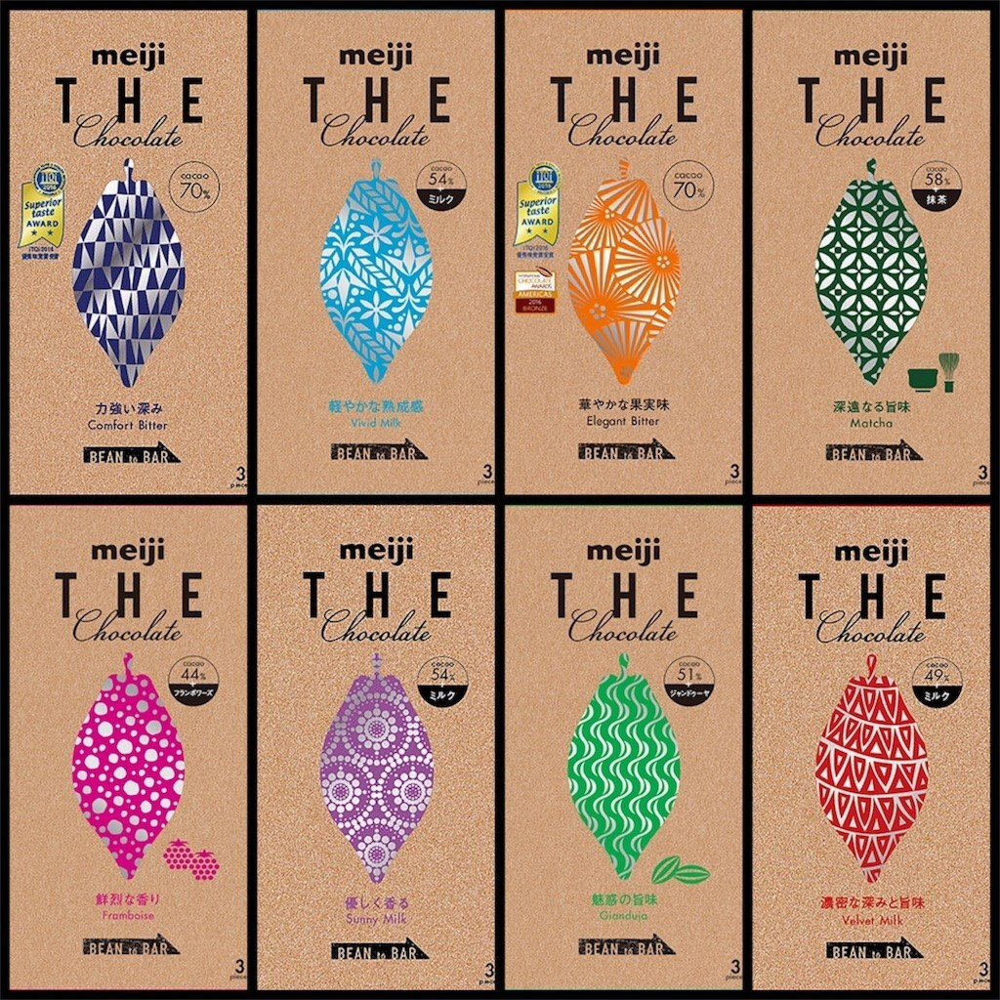
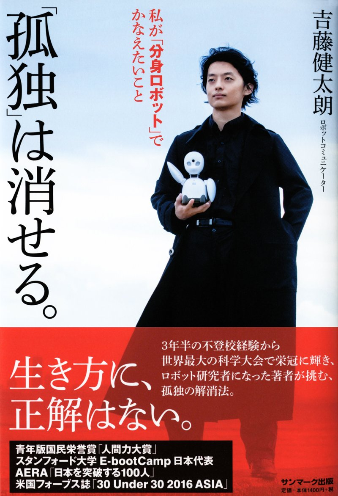
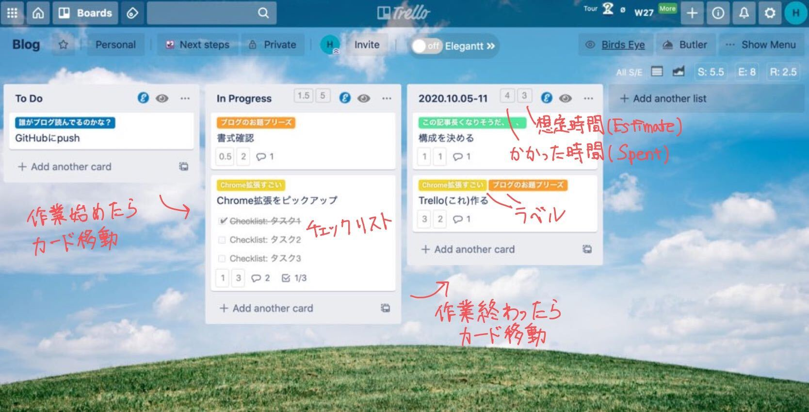
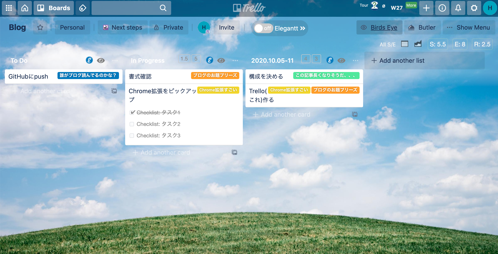
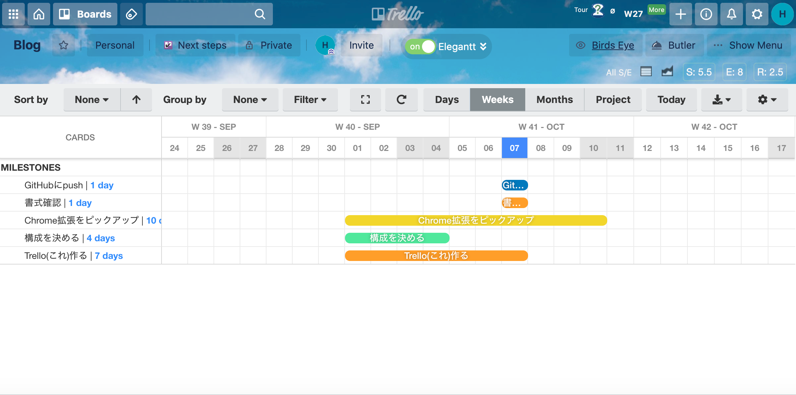
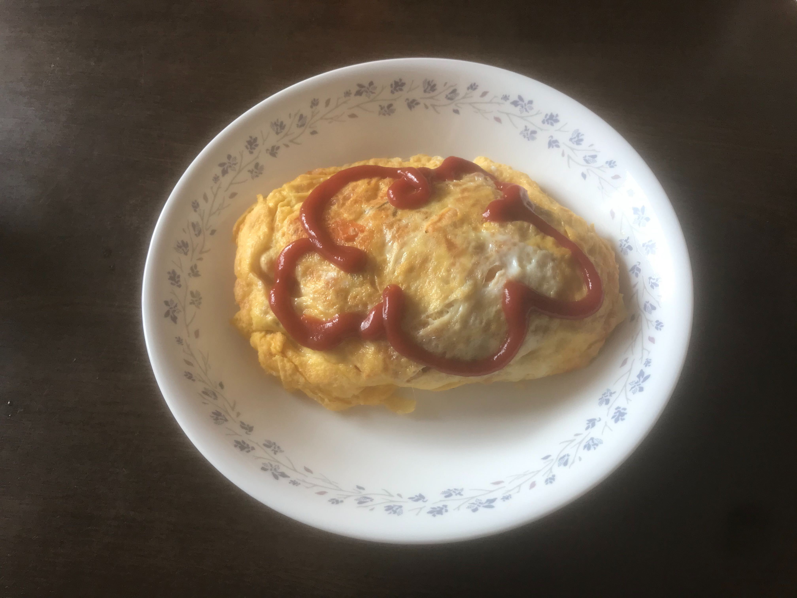
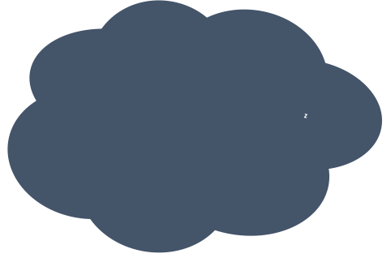
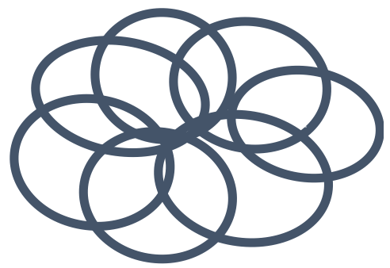
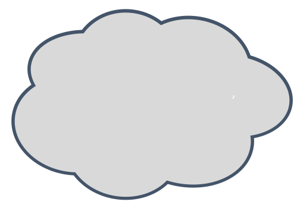

2020.10
Table of contents
- The app RunCat
- I can’t stop touching my hair.
- Follow-up about velvet again
- My belief
- Recieving doesn’t hurt
- Note that cloud observations have their peculiarities
- Side out and Break at Volleyball
- Follow-up about velvet
- My Dear Velvet
- Trump and Biden’s thoughts on climate change
- Pros and Cons of online meetings
- I got my hair colored red inspired by Ory.
- Masks are useful for hiding no make-up.
- Does she look beautiful if she is thin?
- The key to online drinking sessions is to use text chat
- Recommend Trello plus chrome extension for task management
- We do have some expertise
- Don’t you know IPCC?
- Drawing
- Virtual background
- Birthday
- Weaknesses are advantages
The app RunCat
おすすめアプリRunCat RunCat
猫がCPU使用率に応じた速さで、メニューバーを走る。
実用面よりも、とにかくかわいいので入れてよかった。
2020.10.20
I can’t stop touching my hair.
ついつい髪を触ってしまう
手を使わない作業中、あるいは作業の手を止めてまで、髪の毛を触ってしまう。 枝毛や切れ毛を探すことが、四つ葉のクローバーを探すのと同じように楽しいのだ。 髪が長くなってからは、結ばれた毛が見つかることもある。
対面での会話中にもついついやってしまうが、決して快く思われないだろうからやめたい。
2020.10.19 から２時間遅れ
Follow-up about velvet again
ベルベットの続々報
もう二度と、ベルベットの市販品を見ることはないと思っていた（再）。 ところが先ほど、スーパーに並んでいるのを見つけた（再）。 そこにあった10箱すべて、買い占めてしまった（再）。
え、あんなポエム投稿してまで惜しんだのに、もしかして販売休止されてない？
2020.10.18
My belief
私の信条
座右の銘は特に決めていないが、自分の信条として心掛けていることはある。言葉にするなら
責任を自分に求める/タスクフォーカス/一球入魂
となる。これらは私の中で、ほぼ同義だ。
「責任を自分に求める」という考え方を意識しはじめたのは、大学３年生のとき。 部活で問題が起こり、他人の文句ばかり言ってしまった。 そんなとき先輩に言われた「責任を人に求めず、自分に求めるべき」が、妙に心に響いた。 ロジカルな考え方だと感じたから。 以来、折に触れて心掛けている。
「責任を自分に求める」という考え方に、他人に伝えやすい共通言語を与えてくれたのが、ハイキュー!!の次のエピソードだ。 やはり偉大な漫画。
「このチーム最後の試合にするわけにはいかない。」 「自分が最も優れた選手なら、この局面も乗り切れたはず。」 （鉤括弧内は引用ではなく、漫画の要約） そんな風に、気負いすぎ考えすぎで調子を落とした選手が、コートを離れ、監督から次の言葉をもらう。
“タスクフォーカス”
試合の最終的な結果や 審判のジャッジ 対戦相手の行動
それらは自分がコントロールできないもの
自分がコントロールできるのは
自分の思考と行動だけ
参考資料「バレーボールメンタル強化メソッド」渡辺英児・著（実業之日本社）
今の自分にできる最善のプレーに集中することで、その選手は調子を取り戻す。 バレーボール以外の様々な場面、仕事や人間関係についても、当てはまるのではないだろうか。 結局は自分の最善を尽くすことが、望ましい結果に最も効率よく貢献する。
このタスクフォーカスを、私はあらゆる場面で心掛けている。 そう割り切れることばかりでないけど、この考え方を知っているおかげで、気持ちが切り替えやすいこともある。
2020.10.18
Recieving doesn’t hurt
レシーブは痛くない
バレーボールをやっていたと言うと、レシーブが痛くないかと、よく聞かれる。 慣れれば全く痛くない。 むしろ、ボールの重みが心地よくなる。 ちなみに内出血も起こらなくなる。
初心者がレシーブに痛みを感じる理由は、２つあると思う。
１つ目は、腕をボールの方へ振ってしまうことだ。 もちろん緩いボールをレシーブするときは、力を加えるべくボールの方へ腕を振る。 しかしスパイクの様に速いボールのレシーブでは、ボールの勢いを緩めることが求められる。 レシーブの瞬間、腕はボールに押されて引かれるものなのだ。 想像されるよりも撃力は小さい。
痛みを感じる理由の２つ目は、腕が刺激に慣れていないことだ。 何も説明する気がないみたいだが、これは本当である。 経験者であっても、久しぶりにバレーをすると、腕が痛い。 ところが、数回練習したあかつきには、全く痛くなくなる。
この経験則の医学的根拠を探したら、次の記事を見つけた。 バレーボールのレシーブで手が痛いって？原因はこれだ！
「骨膜という痛みを感じる神経の感覚が鈍ってくるので痛みを感じにくくなる」という記事の内容が正しいかは分からないが、特に皮膚が厚くなったり固くなったりはしない、という経験に矛盾しない。
かれこれ１年間ボールに触ってないので、今度やるときは、とても痛いだろうなぁ。
2010.10.17
Note that cloud observations have their peculiarities
雲の観測データには注意が必要
全球モデルの放射・雲気候値を評価したいけど、どうしたら？ そんなときは、次のサイトにあるプロダクトと比較するのがおすすめ。 CFMIP-OBS: Cloud Observations for model evaluation 衛星観測に基づいた、月平均の放射や雲量などが、netcdf形式で手に入る。
CERES-EBAFは、放射（OSR,OLRなど）プロダクトとして、論文で最もよく見るものだ。
雲のプロダクトはこのサイト内だけでも複数あって、どれをモデル評価に使うべきか分かりにくいかもしれない。 それぞれに長所と短所がある。
雲の経年変動に関心があるなら、ISCCP（私はイスキップと呼んでいる）がよいだろう。 1983年から2008年まで長期間のデータがある。 トレンドも評価したいところだが、観測期間中に測器のクセが系統的に変わっているという論文を読んだことがあるので、注意が必要だ。
雲量(cloud cover)を定量的に評価したいなら、CALIPSO-GOCCPがよいだろう。 他の測器では捉えられないような、薄い雲も検出している。
観測頻度や測器感度の都合上、“完璧な“観測データは存在しない。 モデルの値と比較するときは、そのことを認識するべきである。
私自身はモデルと観測の雲を研究しているので、もしこのあたりの知識でお役に立てそうなら、遠慮なくきいてください。
2020.10.16
Side out and Break at Volleyball
バレーボールのサイドアウトとブレイク
今週末17日に、Vリーグが開幕する。Vリーグとは、国内最高峰のバレーボールリーグである。 バレーボール Vリーグ オフィシャルサイト
こちらは、いつも楽しく拝読しているライター田中夕子さんの、ニュース記事。 感染の不安を煽るより、今だからこそバレーボールを楽しもう。「Ｖリーグが始まるよ」
今日は、バレーボール観戦を大局的に楽しむポイントのひとつ、サイドアウトとブレイクの非対称性を解説する。
バレーボールは、そのラリーを制したチームが、次のラリーのサーブ権をもつ。 サーブを受けるチームが得点することをサイドアウト、サーブを打ったチームが得点することをブレイクという。
一定以上のレベルでは、サーブを受けるチームの方が、そのラリーで有利である。 男子Vリーグのサイドアウト率は、約70%と言われている。 互いにサイドアウトを重ねても点差はつかないので、試合の局面を動かすのは、ブレイクである。
たとえば、デュースから始まる次の動画。 ほとんどがサイドアウトで、ブレイクによって均衡が破れる様子が分かる。 手前の黄色ユニが堺、奥の赤ユニがサントリー。 近畿総合決勝 サントリー対堺 1セット目終盤
ツリーで解説されているプレーは、ハイキュー!!でも取り上げられている。
- リードブロック（月島、伊達工業ほか）
- ブロックの手を真っ直ぐ（黒尾）
- セットを極力オーバーで（宮侑）
- 中でとったあと後、そのままAクイックに（ニコラス）
- サーブを攻める（多数）
- シンクロ攻撃（烏野ほか）
- ゲスブロック（天童）
などなど。 ハイキュー!!の魅力の一つは、現実のプレーに忠実な描写をしているところだ。
…バレーボールを知らない人向けに基本のきを書くつもりだったが、語りたいことが止まらなくなってきた。 人は往々にして、自分が好きなことについて雄弁だ。
2020.10.15
Follow-up about velvet
ベルベットの続報
もう二度と、ベルベットの市販品を見ることはないと思っていた。 ところが先ほど、スーパーに並んでいるのを見つけた。 そこにあった10箱すべて、買い占めてしまった。
1g1gを文字通り噛みしめようと思う。
2020.10.15
My Dear Velvet
いとしのベルベット
最近の投稿は真面目な話が多かったので、好きなお菓子の話でもしよう。
私はチョコレートが好きで、ほぼ毎日食べている。 エネルギー源の２割くらいが、チョコレートだろう。
そんな私の推しチョコは、明治ザ・チョコレートシリーズだ。  印象的なパッケージに包まれたこの製品を、一度くらいは目にしたことがあるだろう。 このシリーズは、はっきり言って日常的に食べるチョコとして高価だが、カカオの原産地やら製法によって全く異なる風味を楽しむことができる。
その中でも特に、赤いパッケージの「明治 ザ・チョコレート濃密な深みと旨みベルベットミルク」が好きだった。 ベルベットミルクについて語ろう！！ とにかく、味が濃い。 ほんの少し齧っただけで、口の中がミルク！！！ナッツ！！！の甘みでいっぱいになる。 原材料にナッツや香料は含まれていないので、カカオの風味でこんな個性を出すことができるのかと、驚く。 酸味はなく、お子様舌にはもろ好みの味だった。
と、こ、ろ、が、このシリーズは先日リニューアルされ、「…ベルベットミルク」は販売休止となったようだ。 産地で変わる4つの香味、新登場。meiji THE Chocolate（明治 ザ・チョコレート）のブランドサイト
すごく残念。楽天で120箱セットが３万円強で売られているが、買うかどうか悩む。
2020.10.14
Trump and Biden’s thoughts on climate change
トランプとバイデンの気候変動に対する考え
日本学術会議の会員任命拒否問題について、ニュースで大きく取り上げられている。 研究者界隈では深刻な問題だと認識されており、私の所属する学会を含め、いくつかの学会が共同で緊急声明を出した。 「日本学術会議第２５期推薦会員任命拒否に関する緊急声明」 今後の動向が気になる。
分野にもよるが一般に、研究を遂行するためには莫大なお金が必要となるため、研究体制は政治に大きく影響される。 研究と政治の関係について話題になったとき、私はしばしば分かりやすい例として、”トランプが気候変動を信じていないゆえに、気候研究の予算を削減した”という話をする。
今更ながら、気候変動に対するトランプの認識と施策について、正確な情報を収集しておきたい。 アメリカの大統領選挙が11月に近づいており、候補者となっているトランプとバイデンの、気候変動に対する考えの違いも気になるところである。
これらについてソースが明確かつ最新の情報を集めるため、9/29に行われた大統領候補２人の討論から、気候変動に関連する意見をまとめた。 以下に書く情報は、討論会の文字起こしのうち、48:50~59:19の部分に基づく。 Donald Trump & Joe Biden 1st Presidential Debate Transcript 2020 - Rev
ーーー討論会よりーーー
- トランプまとめ
これまでの４年間でパリ協定を脱退し、オバマ前政権が導入した環境規制を撤回した。 そのおかげで経済が回って国民は幸福だと、自身の施策を肯定する。 地球温暖化の原因のうち、一部は人間活動にあると認めている。 アメリカ西部の大規模な森林火災については、気候変動の影響には触れず、森林の管理を行うことが大切だと唱えた。 綺麗な水と空気の重要性を強調し、そのために植林を行っているという。
- バイデンまとめ
環境施策のために、２兆ドルという大型の予算を組む予定だ。 化石燃料による電力生成を2035年までに終わらせ、温室効果ガス排出を2050年までにゼロにする、という目標を掲げる。 莫大な予算が経済を阻害するのではないかと問われると、環境保全を進めることによって、たくさんの良質な雇用を作り出すと応じた。 また地球温暖化が進むと、洪水・ハリケーン・海水面上昇に対し、お金を投じる必要が生じることを指摘している。
- パリ協定について
トランプ：パリ協定はひどいもの(disaster)だ。
バイデン：パリ協定に再加盟する。他国と協力することが、二酸化炭素を減らすために有効。
- 電気自動車について
トランプ：安く安全な車が増えればよい。電気自動車が悪いというわけではない。
バイデン：電気自動車へ移行できるように、ハイウェイに50万箇所の充電場所を設置する予定だ。
- グリーン・ニューディール
トランプ：100兆ドルもかかる。
バイデン：それは私の施策ではないし、支持しない。自身のプランを支持する。
ーーー討論より、おわりーーー
トランプとバイデンの、気候変動対策への積極性は、全く異なる。 文字からも、二人が激しい言い合いをしたことが伺えた。
最近のトランプは、人間活動が地球温暖化の一因であるという科学を、全面的ではないにせよ認めているようだ。
2020.10.13
Pros and Cons of online meetings
オンライン学会の長所と短所
今週は月曜から金曜まで、9 p.m.~2 a.m.のオンライン学会に参加する。 学会自体は楽しみだが、体力的にハードだ。
今後もしばらく続くであろう、オンライン学会の長所と短所を挙げてみる。
オンライン学会のここがいい!!
- 移動に時間とお金がかからない。宿泊費がかからない。参加費もタダor安い。
- 発表に関する資料がアップロードされる場合、ゆっくり閲覧できる。
- 部分的な参加や、セッションの移動が容易。
- チャットでの質問は、発言するよりも敷居が低い。
オンライン学会のここがだめ!!
- 新しくコネを作ることが困難。
- 観光できない。
- 発表がよく分からないとき、離脱しやすい（メリットでもある？）。
- 未公開の成果が流出する危険がある。スクショは防げない。
- 画質や音声が悪いとストレス。
- 国際学会の場合、JST深夜の開催が多い。昼にも用事があると、寝るタイミングが難しい。
- 他人のインナーカラーに気づかない。
個人的には、オンラインと現地の併用が嬉しい。 フルで参加するなら現地、少し覗くだけならオンラインがいいなあ。
2020.10.12
I got my hair colored red inspired by Ory.
吉藤健太朗さんに感化されて、髪の毛を赤に染めた
吉藤健太朗さんが代表取締役を務めるオリィ研究所は、ミッションに
孤独化の要因となる
「移動」「対話」「役割」などの課題をテクノロジーで解決し、
これからの時代の新たな「社会参加」を実現
することを掲げている。 オリィ研究所のミッション
吉藤さんの、孤独を解消するという大きな目標に向けて野心的に行動する様が素敵で、応援させていただいている。 気になった方は、ぜひウェブ検索していただければ。取材記事がいくつも出てくる。
著作も出している。 「孤独」は消せる 
さて、この写真のように、彼はいつも黒い白衣を身に纏っている。 そのメリットに
10年前に会った人が覚えてくれている
ことを挙げていた。 彼のツイート
自己プロデュースの一環として、私も目立つ外見的特徴がほしい。 しかし、黒いマントを纏ったり、星形の眼鏡をかけるような勇気はない。 そこで許容範囲の目立つこととして、髪の毛を赤色に染めた。
なんていいつつ、髪の毛全部を赤に染める勇気すらなかったので、インナーカラーである（内側だけ染めた）。
染めた今となっては後の祭りだが、私が顔と名前を売りたい方々の大半とは、当面オンラインで接することであろう。 はたして画面越しで、インナーカラーに気づいてもらえるだろうか。 「髪の毛が赤い人」としてよりも、「バーチャル背景がちびまる子ちゃんの居間の人」として印象に残る可能性の方が、まだ高そうだ。 とほほ。
2020.10.11
Masks are useful for hiding no make-up.
マスクはスッピン隠しに便利
今年はあらゆる場所でマスク着用が推奨され、外ではほとんどの人がマスクをしている。 ゆえに、わざわざマスク着用の理由を聞かれることはない。 この文化は個人的に、ノーメイクの状態をマスクで隠しやすくて、便利だと感じている。
去年までは、ノーメイクを誤魔化すためにマスクを着けていると「風邪ひいたの？」と心配されてしまい、「あ、いや、風邪予防みたいな、なんかそんなかんじです」と、不気味な返答をしていた。 スッピンを晒すのは嫌だし、晒した際には顔色の悪さゆえ、体調を心配される始末である。
今年は食事を人と共にするとき以外、スッピン＋人が近づいてきたらマスク、でいられて楽だ。 マスクに化粧が着くことだけ悩みだが、みなさんどうしているんだろう。
2020.10.10 に更新したつもりがpushに失敗していた
Does she look beautiful if she is thin?
痩せている方が美しい？
「愛の不時着」という韓ドラが、流行っていることは知っていた。 タイトルに“愛”が入っているドラマは展開がドロドロしていそう、くらいの印象しか持っていなかったが、なんと、あのヒョンビンが主演を務めているというではないか。
十数年前の中学生だった頃、「私の名前はキム・サムスン」という韓ドラを見ていた。 ヒョンビンは、そのドラマにも出演していたのだ。 作中に出てくる豚の人形、サムスンブタを誕生日に買ってもらい、今でも部屋に置いてあるくらい、お気に入りのドラマだった。 サムスンが懐かしくなった私は、話のあらすじをウェブで読むなどした。
amazon prime video 私の名前はキム・サムスン (字幕版)
主人公のサムスンは、太め、という人物設定だ。 ところが動画に出てくるサムスンは、さほど太っているように見えない。 一体なぜ彼女が、わざわざ“太め“と形容されるのか。
だって、一般に女優のみなさま、役が“細め“という設定でもないのに、細すぎる！ サムスンを太めというなら、彼女らは“細すぎ“ではないだろうか。
細い人が好んで登用される傾向は、ファッションモデルでさらに顕著だ。 彼女らがかっこよく着こなすニットのワンピースは、私が着ると、「ずんぐりむっくりどどーん！」という迫力が出てしまう。 ファッションの参考にするためには、様々な体型の方がモデルをやってくださる方が、ありがたいだろうに。
メディアで目にする、美しいと形容される若い女性は、みな細いのだ。
中学生のとき、ややぽちゃ体型だった私は、痩せたいと思っていた。 友達の多くは、標準体重より軽いにも関わらずダイエットに取り組んでおり、健康診断前には断食して健康体重から遠ざかる努力をしていた。
多くの若い日本人女性が、痩せ体型に憧れているが、痩せすぎは健康被害をもたらす場合もある。 日本人女性のやせすぎは危険レベル…なぜ進んで健康を犠牲にするのか 私自身は今でも、痩せている方が服がカッコよく着こなせる、と思っており、太ることは怖い。
女優やモデルに痩せている人ばかり登用したり、美しくなることを目的としたダイエット特集を組んだり、太っている人を面白いと形容するような、メディアが痩せ信仰を広めている。 最近は、プラスサイズモデルが取り上げられるなど、様々な体型を否定せず受け入れる流れができていると感じる。 このような流れが強まれば、無理なダイエットをする人が減り、自分の体型を肯定できる人も増えると期待する。
私がここで提案したいのは、本人がすすんで言い出さない限り、他人の体型の変化に言及しないことだ。 人によっては、自身の体型を非常に気にしている。 私の場合、「太ったね」と言われれば傷つくし、「痩せたね」と言われても、体型の変化に気づかれるという事実がいつか私を傷つける。
2020.10.09 から10時間遅れ
The key to online drinking sessions is to use text chat
オンライン飲み会のコツは文字チャットを併用すること
昨今は、飲み会のほとんどがオンライン開催となった。
オンラインで苦しいと感じるのは、会話のグループが一つになってしまうことである。 つまり、誰かが喋り始めたら、全員がその人が話すのを聞く状況になる。 人によっては全員に注目されて喋ることにプレッシャーを感じるだろうし、たくさん話したい人も聞き手に回る時間が増えてしまう。 ５人を超えると会話が難しくなるな、と感じる。
解決策は、口頭で話している裏で、文字入力のチャットを並行することだ。 口頭の話に情報を付加するもよし、全く関係ない話をするもよし。 参考リンクを貼るのも、有用である。 文字チャットを並行するだけで、多くの人のストレスが和らぐ。 （たまに文字チャットだけになるが、それもよし）
ツールはDiscord, Zoom, LINEしか試していないが、他に便利なものがあったら試したい。
2020.10.08
Recommend Trello plus chrome extension for task management
タスク管理ツールにTrello+chrome拡張がおすすめ
これまでの人生で、様々なツールをタスク管理に使ってきた。 紙のスケジュール帳や付箋は、運んだり取り出したり書き直したりが面倒で、幾度となく挫折した。 クラウドのツールについては、アプリ版Trelloは達成度を可視化するのが難しく、GitHub Projectsはプルリク等と関連付けできてしまうのが目障りで、やめた。
私がタスク管理ツールに求めることは
- クラウド上。同期が瞬時。
- 機能が多すぎない。
- 終わったときに達成感が得られる。
である。
最近使っているブラウザのTrello+chrome拡張は、これらを無料でかなえてくれて、とても気に入っているので紹介する。
目次
(1) Trelloとは
(2) Trello+chrome拡張の運用例
(3) お気に入りのTrello chrome拡張
(1) Trelloとは
カンバン方式が特徴のタスク管理ツールだ。 簡単にアカウントを発行でき、無料で使えるTrello。 カード化されたタスク（アナログの付箋をイメージ）を、ドラッグ&ドロップでリスト（アナログのボードをイメージ）を移動させるだけで、タスクの進捗度を変更できる。面倒くさがりにありがたい。
ちなみにGitHub Projectsも、カンバン方式を採用している。タスクがコード更新と密接に関わるような人は、GitHub Projectsと相性がいいかもしれない。 プロジェクト管理ツールとしてGitHubを”普通に”使う
カンバン方式を気に入ってアプリ版Trelloを使っていた時期もあるが、タスク達成度が見えにくいことと、タスク内の小タスクが見えないことが不満だった。しかし、(3)で紹介するChrome拡張を入れたら(2)の運用例のように、これらの不満が解消された。
(2) Trello+chrome拡張の運用例

私は普段もTo do, In progress, 週毎の完了リストを作って運用している。
(3) お気に入りのTrello chrome拡張
カードを開かなくても、チェックリスト（カード内の小タスク）が見える！
カードのタスクにかかる実行時間の見積もりと、実績を表示。 ボード毎に実行時間を表示できるので、達成感が得られる！
これも入れないと、上記２つの機能が使いにくかった。
カードに付けたラベルの文字を表示
ログをシンプルに
ボードに表示される情報を少なくできる。カード一覧を見たいときに、ONにしている。

（私は普段は使っていないが)タスクのスケジュールを時系列で一覧表示できる。

これ以外にもカレンダーやメールなどと連携した様々な拡張機能があるし、リストの分類方法など使い方をカスタマイズできる。
また、ここで紹介したスクショのページ全体はボードと呼ばれ、無料で10個まで作成することができる。 研究とプライベートでボードを分ける方法も、よいだろう。
参考にしたサイト
[図解解説付き] 紙はもう要らない！？無料のタスク管理アプリ「Trello」が最高である10の理由と使い方
Trelloを使う時にデフォルトで入れるべきChrome拡張機能
2020.10.07
We do have some expertise
たしかに専門性は身についている
今日は法学×英語×ディスカッションという、 ハードな授業に飛び込んできた。 覚悟はしていたが、グループディスカッションにさっぱりついていけず、 私の発言は「すみません。さっぱり分かっていません。」と釈明するに止まった。
専門用語を知らないし、principleやresponsibilityのような単語が並ぶ文を咀嚼するには、かなり時間がかかる。 また、「この法律に賛成するか」のような、意見表明型のディスカッションに慣れていないことも、苦しむ要因となった。
自分の専門とする気象学の授業であれば、ここまでの置いてきぼりを感じることはない。 今学期も、学部生向けの専門科目の授業を理解できない、とがっかりしていたが、方程式に出てくる偏微分,U,バーの意味は分かる。 内部向けのセミナーも、細部まで追うことはできていないが、ENSO, AMOC, 放射強制力の意味するところは知っている。
学部生の頃から身につけてきた知識は、学会や授業やセミナーにおいて、私の理解を助けている。 このような一般人がほとんど知らない知識をもっていることを、専門性として誇ってもいいのではないか。 いつまでたっても気象学は分からないことばかりで、何も身についていないと感じていたが、 勉強したことで身についた専門性は確実にあると、気を持ち直した。
同じ専門分野の方々と話していると、つい見落としがちなことである。
2020.10.06
Don’t you know IPCC?
IPCCって知ってる？
今学期は気が済むまで勉強しようと思い、他学部を含めて専門外の授業に潜りまくっている。勉強する一番の動機は、社会科学において、理学系の気候研究がどのような意義を持つのか知りたい、ということにある。ターゲットとなる授業は、地球環境に関係する倫理・法・政治・経済を扱うもの。これらの内容は普段の研究内容に直接は関係しないし、学びたい範囲が広すぎて、ちょっと手に負えてない。
さて先日、工学部の授業中に「IPCC（気候変動に関する政府間パネル）を知っていますか？」というアンケートが実施された。「知っている」「名前は知っている」「知らない」の3択のうち、「知らない」を選んだ人が36%であった。
IPCC(Intergovernmental Panel on Climate Change)は、気候変動について科学に基づく包括的な評価を、政策決定者に向けて示すために作られた、国際的な組織である。 IPCCが発行する評価報告書は非専門家に対し、気候変動に対する緩和策・適応策を検討するために必要な、科学的な知見を提供してきた。 その報告書は、気候研究の発展と人間社会をつなぎ、気候学者の存在意義を示す上で最も重要なものだと認識していたので、IPCCの知名度の低さはショックであった。
参考資料
気象庁「IPCC（気候変動に関する政府間パネル）」 https://www.data.jma.go.jp/cpdinfo/ipcc/index.html
環境省「気候変動に関する政府間パネル（IPCC）第5次評価報告書（AR5）サイクル」 http://www.env.go.jp/earth/ipcc/5th/
2020.10.05
Drawing
お絵描き
Q. 今日のお昼のオムライス。何の絵でしょう？

A. 雲。簡単でしたね！
雲の研究をしているので、雲のポンチ絵を描くことがある。 私がパワポで作る方法を紹介する。
(1) 楕円を重ねて雲っぽい形にする。グループ化する。

(2) (1)を塗りつぶしなし&太めの線にして、雲の輪郭を作る。

(3) (1)を塗りつぶしあり&線なしにして雲の本体？を作り、(2)の上に重ねる。

で完成！簡単だし、個人的にはこれで満足のいく完成度である。
2020.10.04
Virtual background
バーチャル背景
Zoomのバーチャル背景を「ちびまる子ちゃん」の和室画像にしている。 飲み会からセミナーまで、ほとんどこれで通す。
オンラインでは特に、決して威圧しないよう発言したいので、 ゆるい背景が空気を和ませてくれることを期待している。
最近はみんなバーチャル背景やめてしまったので、寒いかんじになっていないか懸念。
2020.10.03
Birthday
誕生日
今日のランチに後輩達と食堂にいったら、いわゆるお誕生日席が一つある席の配置だった。 そこに座った後輩に誕生日なのか？と冗談のつもりでたずねたら、本当に誕生日だった。 こんなきっかけがなければ、その人が誕生日であることには気づかないままだっただろう。
中学や高校では、仲のいい（あるいは部活が同じ）友達の誕生日にプレゼントを渡すため、年に何十回もお店であれこれ探し回らねばならなかった。当日にはおめでとうのデコメールを打ち、学校でも重ねておめでとうと言って、プレゼントを渡した。
大学の部活では、同期の間でプレゼントをやりとりする風習があり、当人以外の同期と一緒にプレゼント選びに奔走するのが楽しかった。誕生日近くの部活終わりにみんなでハッピーバースデー・トューユーを歌い、プレゼントを渡した。
少なくとも大学では誕生日をイベントとして楽しんでいたが、中高大での一連の祝福は、忘れてはならない義務的なものだった。 大学院に進んでからは、おめでとうを言ったりプレゼントを渡したりを、定常的にしている人はいない。 それでも、たまたま思い出しておめでとうと伝えると喜ばれるし、祝ってもらえたときは嬉しかった。
覚えていたかどうかとか、プレゼントを渡すかどうかなんて気にしすぎないで、 誕生日がそうしたちょっと嬉しいのきっかけになれば十分だ。誰かの誕生日に気づいたときは、すすんで祝福しようと思っている。
2020.10.02
Weaknesses are advantages
短所が長所
昨日のブログで、学問に対しては一般性を求めたくなるという話をした。 ところが個人として接する人に対しては、個別的な側面に魅力を感じる。
もちろん稀有な才能を持っていたり、変わった体験をしている人にも惹かれるが、何か特別な人が面白いと言いたいのではない。 誰もが何かしらの形で持っている、その人に固有の癖が面白いのだ。
- 周りの人がどうでもいいと思ってしまうような、細部への拘り
- 特定の話題について熱く語ってしまうこと
- 奇想天外だが、その人ならやりかねない行動
といった個性的な部分にこそ、計算されていないその人の本質が見える。
「friends」という、20年くらい前のコメディドラマが好きだ。 主人公６人はわがまま・負けず嫌い・風変わり・理屈屋・皮肉屋・おバカだが、その際立った個性が愛らしくて気に入っている。 親しみやすさを抱かせるのは、長所よりもむしろこのような短所だろう。
ある人が短所だと思っている気質は、捉え方によっては長所になるだろうし、 たとえ好きになれない気質だとしても、紛れもないその人の個性として大切にしてほしい。
2020.10.01